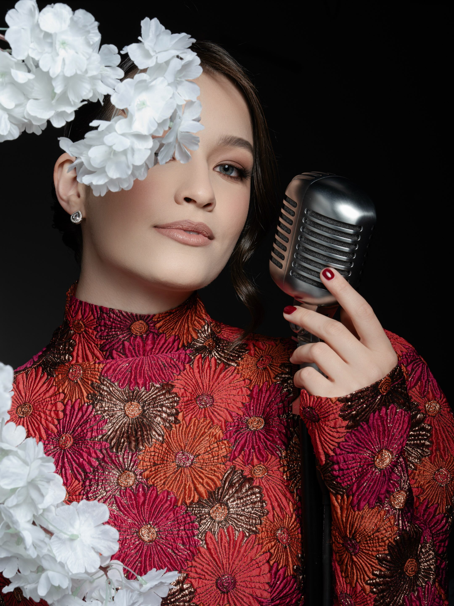
La Vie en Rose
Édith Piaf · ensaio no Besha Garden
Cantora de casamentos — Guarapuava · PR e região
Música que acolhe, emociona e transforma momentos em memórias. Da entrada da noiva à primeira dança — com voz ao vivo, em dueto, trio ou quarteto.
5.0 no casamentos.com.brrecomendada por 100% dos casais
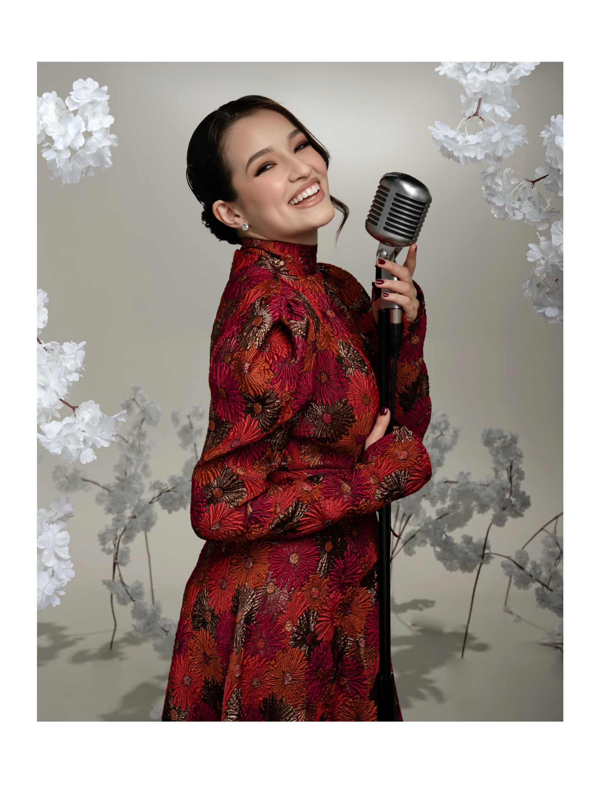
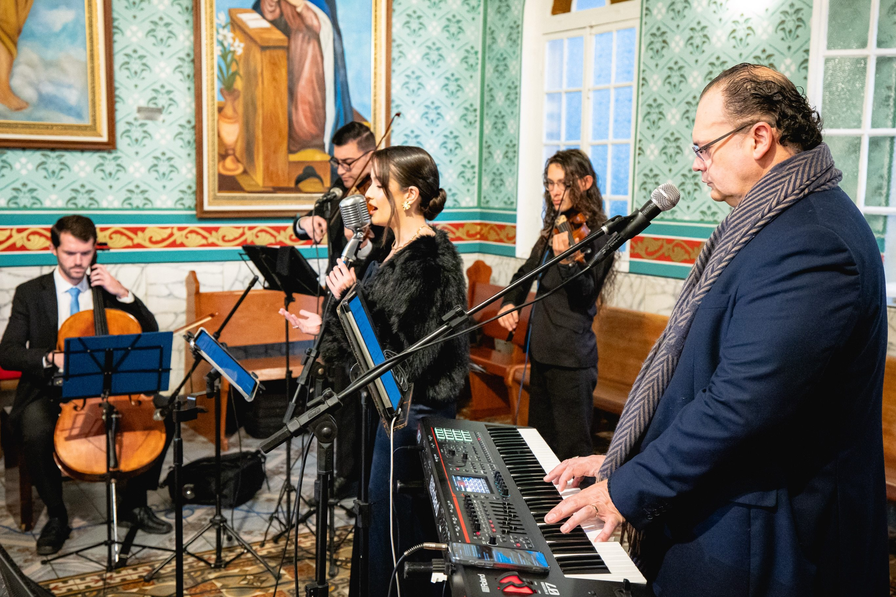
A cantora
A entrada, as alianças, a primeira dança — cada um pede uma voz que esteja ali de verdade.
Natural de Prudentópolis, moro em Guarapuava. Canto casamentos há seis anos e sou professora de canto e técnica vocal. Cada cerimônia pede uma formação — voz e violão para um jardim ao entardecer, trio com violino para a igreja, conjunto com cordas para a festa — e eu ajudo o casal a escolher cada música, sem restrição de estilo. Minha missão é simples: colocar emoção em cada música e deixar o momento ainda mais especial.
Filmes
Toque para assistir com som. Gravações reais — cerimônias, ensaios e recepções em Guarapuava e região.

Édith Piaf · ensaio no Besha Garden
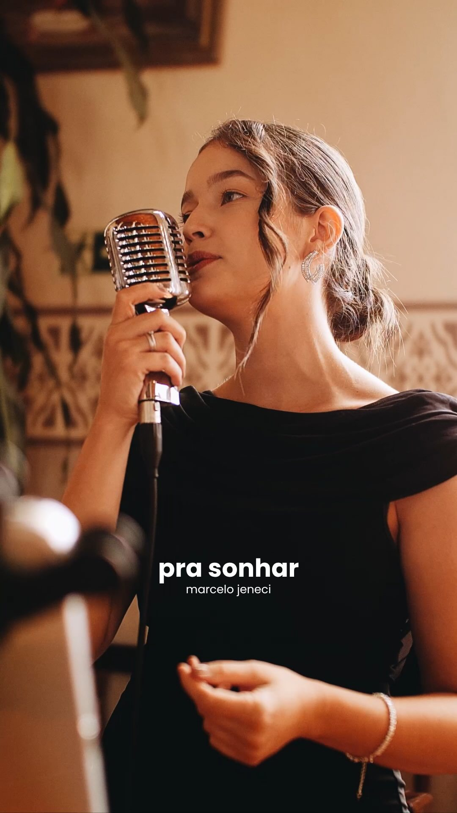
Marcelo Jeneci · cerimônia
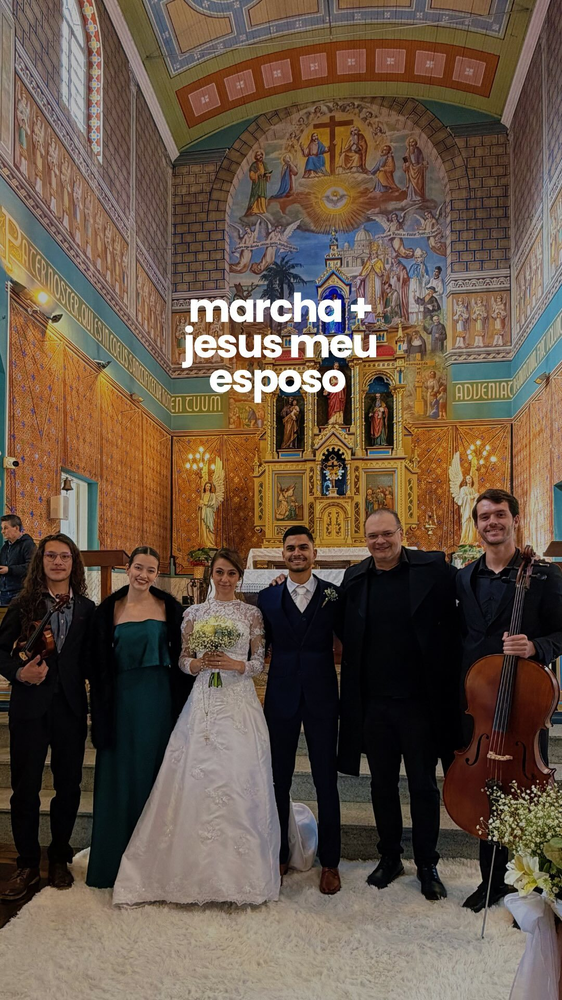
Entrada da noiva · conjunto com cordas
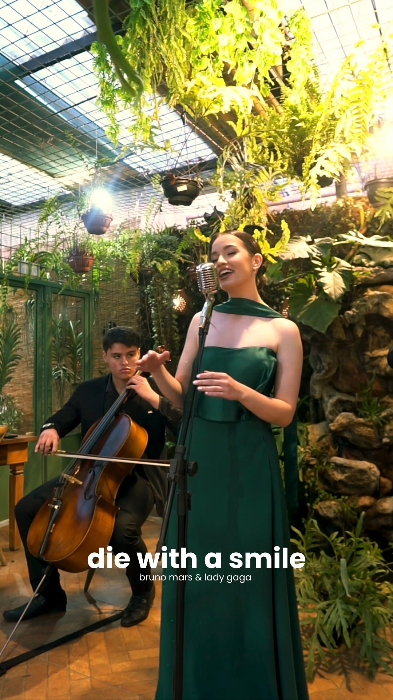
Bruno Mars & Lady Gaga · com violoncelo
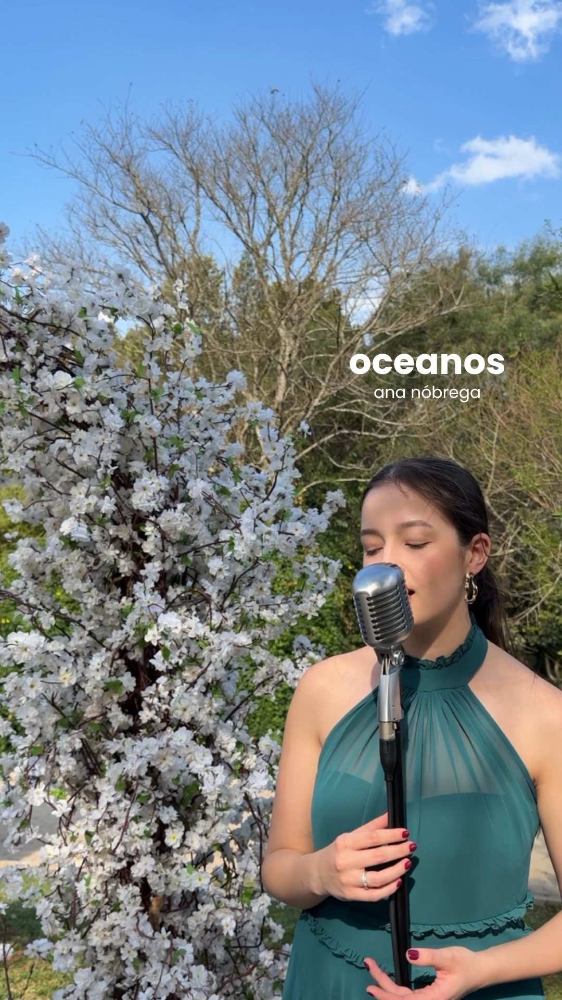
Ana Nóbrega · cerimônia religiosa
Arraste ou use as setas
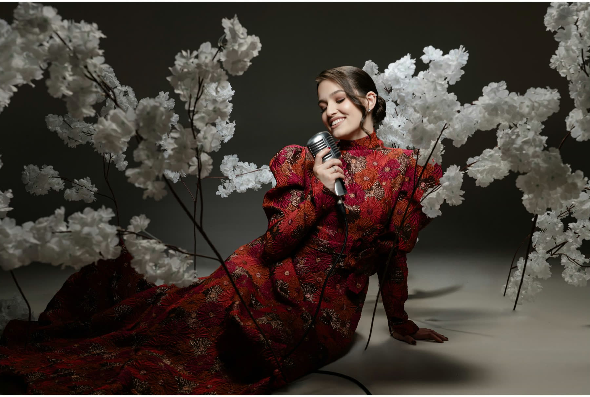
Música que acolhe, emociona e transforma momentos em memórias.
— Jamilli VazDo começo ao fim
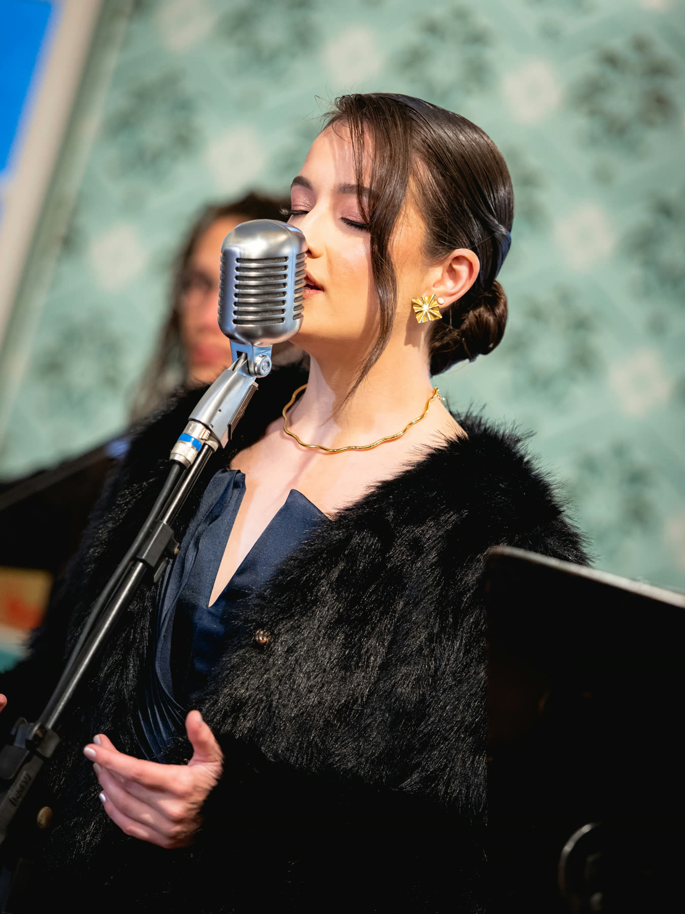
Entrada dos pais e padrinhos, do noivo e da noiva, alianças, comunhão e saída — cada momento com a música certa, respeitando as orientações da igreja.
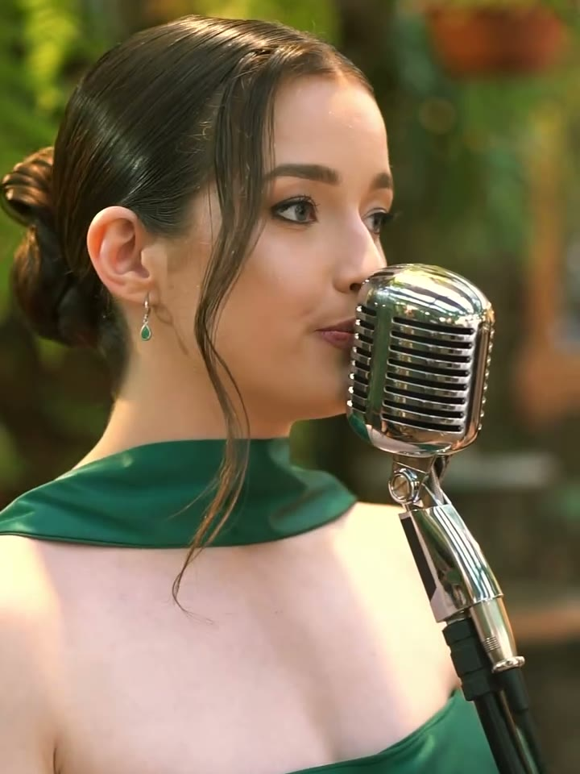
Enquanto os convidados chegam e brindam, a música cria o clima — presente, sem disputar atenção. Dá para somar duas horas de música ao vivo à cerimônia.
Da primeira dança em diante, o repertório sobe junto com a pista — do romântico ao sertanejo, sem restrição de estilo.
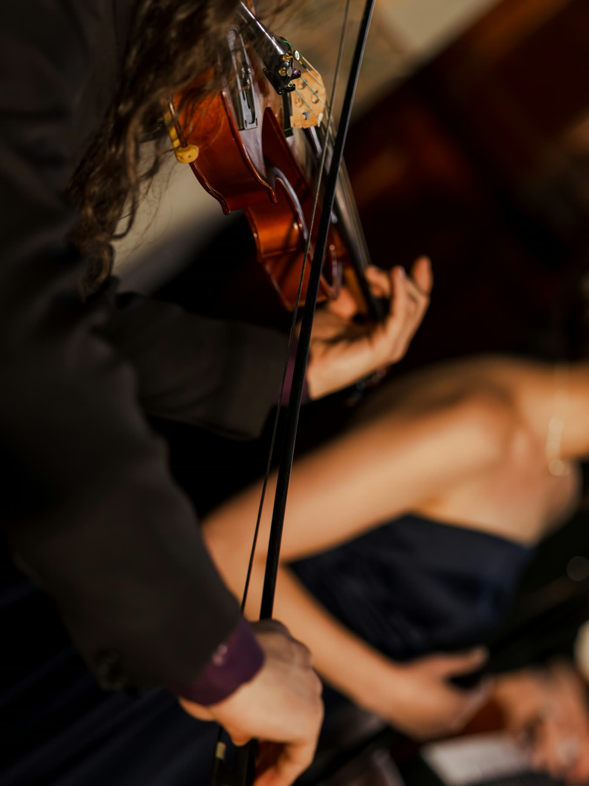
Voz e violão ou piano. Intimista, leve e romântico — jardins, cerimônias ao ar livre e recepções pequenas.
Voz, piano e violino. Marcante e emocionante — o clássico das cerimônias na igreja.
Voz, piano e trio de cordas: violino, violoncelo e viola de arco. Clássico e sofisticado — para cerimônia e festa no mesmo dia.
As formações são flexíveis: dá para trocar instrumentos ou somar trompete, acordeon, ukulele e sax. A sonorização da cerimônia está inclusa em todas.
Repertório
O repertório é montado com cada casal, sem restrição de estilo — nacionais, internacionais, religiosas. Esta é só uma amostra, organizada por momento.
A música de vocês não está aqui? Me conta qual é — o repertório cresce a cada casal. E para cerimônias católicas, preparei um guia com mais de 40 músicas aceitas pela Igreja, organizadas por momento: é só pedir no WhatsApp.
Depoimentos dos noivos
O meu casamento ficou mais lindo e emocionante com a voz dela. Quem contratar não vai se arrepender.
Me senti em um sonho.
Além da simpatia, me ajudou com as escolhas de músicas. A voz delicada e linda deixou a cerimônia ainda mais linda.
A cerimônia foi linda demais, emocionante e única. Deu para sentir algo tão forte, que ficará para sempre em minha memória. Vocês realizaram o nosso sonho.
Antes do WhatsApp
Os casais costumam fechar a data com 1 ano a 1 ano e meio de antecedência. Cada data tem um só casamento — quanto antes você consultar, maior a chance de a sua estar livre.
Sim. Os pacotes cobrem a cerimônia, com sonorização inclusa, e podem somar mais duas horas de música ao vivo na recepção ou no jantar — cada momento com o clima certo.
Duo (voz e violão ou piano), trio (voz, piano e violino) ou conjunto (voz, piano e trio de cordas). As formações são flexíveis: dá para trocar instrumentos ou somar trompete, acordeon, ukulele e sax. Na conversa, eu indico a que melhor combina com o espaço e o estilo da cerimônia.
Sim — essa é a parte que eu mais gosto. Montamos juntos a trilha de cada momento, a partir da história de vocês. Para cerimônias católicas, tenho um guia com mais de 40 músicas aceitas pela Igreja, organizadas por momento da celebração.
Me envia a música pelo WhatsApp. Canto nacionais e internacionais, sem restrição de estilo — e sempre que possível preparo uma versão especialmente para a cerimônia de vocês.
A data fica garantida com o contrato assinado e 10% do valor; o restante é acertado até cinco dias antes do casamento. Aceito Pix, dinheiro e parcelamento em até 12 vezes (com taxa).
Sim — atendo Guarapuava e região, e já cantei casamentos em Prudentópolis, Irati e Curitiba. Me manda a cidade e a data pelo WhatsApp.
Consultar disponibilidade
Se o seu já tem lugar e hora, vamos conversar sobre a música. Me chama no WhatsApp com a data — eu respondo com disponibilidade, formações e valores.
Guarapuava · PR — e região